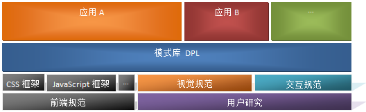

下面这张图很清晰的描述了DPL的功能和组成

下面摘录了一些对DPL的具体描述
CRM-DPL希望做成一套后台通用的UI组建库，除了整合常用的组件，我们还将加入更多的应用案例，让开发同学能即拷即用。
我们希望，开发同学能使用CRM-DPL的组件能直接搭建出视觉、交互体验一致后台页面，而不用依赖UED。我们也希望CRM-DPL能减少前端的工作量。
目前还处于第一个版本，我们将尽快完善，欢迎大家多提意见和需求。
| 模块名称 | 模块名称 | 维护人 | 模块描述 |
|---|
下面的示例，我们加入一个box模块
效果如下：